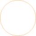
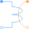
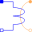
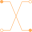
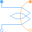

NegativeMagneticPortNegative quasi-static magnetic port of fundamental wave machines |

|
Information
This information is part of the Modelica Standard Library maintained by the Modelica Association.
The negative pin is based on Pin. Additionally the reference angle is specified in the connector. The time derivative of the reference angle is the actual angular velocity of the quasi-static voltage and current. The symbol is also designed such way to look different than the positive pin.
See also
Components (3)
| V_m |
Type: ComplexMagneticPotential Description: Complex magnetic potential at the port |
|
|---|---|---|
| Phi |
Type: ComplexMagneticFlux Description: Complex magnetic flux flowing into the port |
|
| reference |
Type: Reference Description: Reference |
Used in Components (7)
|  |
PolyphaseElectroMagneticConverter Modelica.Magnetic.QuasiStatic.FundamentalWave.Components Polyphase electromagnetic converter |
|  |
QuasiStaticAnalogElectroMagneticConverter Modelica.Magnetic.QuasiStatic.FundamentalWave.Components Electromagnetic converter to only (!) quasi-static analog, neglecting induced voltage |
|  |
Modelica.Magnetic.QuasiStatic.FundamentalWave.Components Crossing of connections |
|  |
Modelica.Magnetic.QuasiStatic.FundamentalWave.BasicMachines.Components Symmetric winding model coupling electrical and magnetic domain |
|
Modelica.Magnetic.QuasiStatic.FundamentalWave.BasicMachines.Components Quasi-static single-phase winding neglecting induced voltage |
|
|
Modelica.Magnetic.QuasiStatic.FundamentalWave.BasicMachines.Components Air gap model with rotor saliency |
|
|
Modelica.Magnetic.QuasiStatic.FundamentalWave.Interfaces Partial two port for graphical programming |